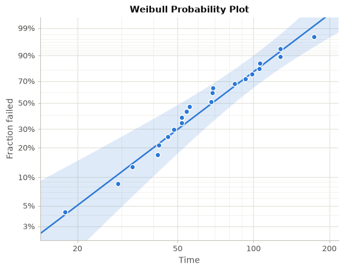

Quickstart
So, you know what survival analysis is and you just want to see what this can do.
If you do not, or censoring is a new word, read
Survival Analysis from Scratch first: it teaches the subject from the
beginning, and this page will then make sense.
(If you have not installed it yet: pip install surpyval; it needs Python
3.11 or later.)
Everything in SurPyval follows one pattern. A fitter (surv.Weibull,
surv.KaplanMeier, surv.CoxPH, …) has a fit() method that takes
your data and returns a fitted model. You then ask the model questions:
what fraction survives to time \(t\), what is the median life (the median
time to the event), what is the
hazard, and so on. Once you know that pattern, and the way data is passed in
(the x, c, n, t arrays described in Types of Data, and
the other letters of The data model), every family of models in the package works the same way.
Not sure which model you need? Choosing a Model takes you there one
yes-or-no question at a time.
Your first fit
Here are 23 failure times (the classic ball-bearing data, in millions of revolutions). We fit a Weibull distribution to them:
import surpyval as surv
x = [17.88, 28.92, 33, 41.52, 42.12, 45.6, 48.4, 51.84,
51.96, 54.12, 55.56, 67.8, 68.64, 68.64, 68.88, 84.12,
93.12, 98.64, 105.12, 105.84, 127.92, 128.04, 173.4]
model = surv.Weibull.fit(x)
model.plot()
<Axes: title={'center': 'Weibull Probability Plot'}, xlabel='Time', ylabel='Fraction failed'>

This gives us the Weibull plot, which was created when the documentation was built, so it is guaranteed to reflect the current version of SurPyval. The points are a non-parametric estimate of the CDF made directly from the data; the line is the fitted Weibull, with its confidence bounds. The axes are scaled so that a Weibull distribution is a straight line, so points that follow the line are evidence that the Weibull is a reasonable choice.
The fitted model can now be interrogated. params holds the parameters (for
the Weibull, the scale \(\alpha\) and the shape \(\beta\)), and every
model has the same set of functions of time:
print(model)
print("Parameters :", model.params)
print("Survival to 50, R(50) :", model.sf(50))
print("Probability failed by 50 :", model.ff(50))
print("B10 life (10% failed) :", model.qf(0.1))
print("Mean life :", model.mean())
print("95% bounds on R(50) :", model.cb(50))
Parametric SurPyval Model
=========================
Distribution : Weibull
Fitted by : MLE
Data : 23 units: 23 events at 22 unique times
Parameters :
alpha: 81.87456057371712
beta: 2.101846884259568
Parameters : [81.87456057 2.10184688]
Survival to 50, R(50) : 0.7014025041049966
Probability failed by 50 : 0.2985974958950034
B10 life (10% failed) : 28.06508988993738
Mean life : 72.51535687411435
95% bounds on R(50) : [0.51879796 0.82556476]
sf is the survival (reliability) function, ff the CDF (the
probability of having failed, or of having had the event, by that time), qf the quantile function (its inverse), and
cb gives confidence bounds; by default two-sided 95% bounds on the survival
function. The shape \(\beta \approx 2.1\) is greater than one, which says
the hazard is increasing: these bearings wear out. The full list of functions
every model shares is in Conventions.
Censored data: one extra argument
Real data is rarely this complete. Suppose the test had been stopped at 100
million revolutions: the five bearings still running at that point have not
failed, all we know is that their lives are longer than 100. These are
right censored observations, flagged with c = 1 (an observed failure
is c = 0):
import numpy as np
x = np.array(x)
c = (x > 100).astype(int) # 1 = still running when the test stopped
x_test = np.minimum(x, 100) # all we saw of those units was 100
censored_model = surv.Weibull.fit(x_test, c)
naive_model = surv.Weibull.fit(x_test) # WRONG: treats 100 as a failure
print("using the censoring flags :", censored_model.params)
print("ignoring them :", naive_model.params)
using the censoring flags : [80.31251346 2.23940991]
ignoring them : [74.39707327 2.85221619]
The censored fit recovers parameters close to the fit on the complete data. The naive fit, which pretends the five survivors failed at exactly 100, underestimates the scale \(\alpha\) (the characteristic life) and overstates the shape \(\beta\): it concludes that the bearings wear out sooner and more abruptly than they do. Throwing away information about survivors systematically biases a life estimate downwards, which is why getting censoring right is the heart of survival analysis. Types of Data explains every kind of censoring and truncation SurPyval supports.
A tour of the model families
The same pattern carries across every area of the package. Each example below is deliberately small; follow the links for the theory (“Analysis” pages) and the practical how-to (“Modelling” pages) of each area.
Non-parametric estimation
Non-parametric estimators make no assumption about the shape of the distribution: they describe the data exactly as it is. They are the natural first look at a data set and the yardstick for checking a parametric fit, but they cannot extrapolate beyond the data. Kaplan-Meier handles observed and right censored data (with left truncation); Turnbull handles every combination of censoring and truncation.
km = surv.KaplanMeier.fit(x_test, c)
print("Kaplan-Meier R(50), R(90):", km.sf([50, 90]))
Kaplan-Meier R(50), R(90): [0.69565217 0.30434783]
Theory: Non-Parametric Estimation. How-to: Non-Parametric SurPyval Modelling.
Parametric estimation
Parametric models summarise the data with a few parameters and, unlike the
non-parametric estimators, can extrapolate: a B1 life or a warranty-period
failure fraction usually sits in the tail where there is little data. If you
are unsure which distribution to use, fit_best fits a set of candidates and
returns the one with the best information criterion (AIC by default):
best = surv.fit_best(x_test, c,
include=["Weibull", "LogNormal", "Gamma",
"LogLogistic", "Exponential"])
print(best)
Parametric SurPyval Model
=========================
Distribution : LogNormal
Fitted by : MLE
Data : 23 units: 18 events at 17 unique times, 5 right censored
Parameters :
mu: 4.169022330327939
sigma: 0.5538935620844343
An information criterion ranks candidates; it does not prove that any of them
is right, so always look at the probability plot of the winner as well. Beyond
the choice of distribution, parametric fits can add a failure-free offset
(offset=True), a sub-population that never fails (lfp=True) or a
fraction that fails at time zero (zi=True); these are defined in
Conventions. Theory and estimation methods (MLE, MPS, MPP, MSE, MOM):
Parametric Estimation. How-to: Parametric SurPyval Modelling.
The available distributions are listed in the API reference,
Parametric.
Regression
Regression models let the life (the time to the event) depend on covariates
Z (a stress, a treatment, a design option). Each row of Z holds the covariates of the
matching row of x. Here about half the units run in condition Z = 1, which
lengthens life by a factor of \(e^{0.7} \approx 2\):
rng = np.random.default_rng(1)
Z = rng.integers(0, 2, (100, 1)).astype(float)
t = 50 * rng.weibull(1.5, 100) * np.exp(0.7 * Z[:, 0])
c_reg = (t > 80).astype(int) # test stopped at 80
t = np.minimum(t, 80)
aft = surv.WeibullAFT.fit(t, Z, c_reg)
print(aft)
print("R(40) for Z=0 and Z=1:", aft.sf(40, np.array([[0.0], [1.0]])))
Parametric Regression SurPyval Model
====================================
Kind : Accelerated Failure Time
Distribution : Weibull
Regression Model : Log Linear [exp(beta'Z)]
Fitted by : MLE
Data : 100 units: 69 events at 69 unique times, 31 right censored
Baseline : Weibull parameters; Wald 95% intervals
estimate se lower 95% upper 95%
alpha 51.48 5.15 42.31 62.63
beta 1.551 0.1623 1.264 1.904
Coefficients : exp(coef) is the acceleration factor; Wald 95% intervals
coef exp(coef) se(coef) lower 95% upper 95% z p
coef_0 -0.6102 0.5432 0.1648 -0.9332 -0.2873 -3.704 0.0002123
R(40) for Z=0 and Z=1: [0.50856708 0.76922125]
The accelerated failure time (AFT) model multiplies time by
\(e^{\beta' Z}\), so the fitted coefficient coef_0 of about \(-0.6\) says that
condition 1 runs the clock at about \(e^{-0.6} \approx 0.55\) of the speed
of condition 0. Other families act on the hazard (WeibullPH,
CoxPH), on the odds (WeibullPO) or add to the hazard
(AdditiveHazards), and AcceleratedLife makes a life parameter
follow an engineering life-stress relationship such as the Arrhenius or
power law. Theory: Regression Analysis. How-to:
Regression Modelling with SurPyval.
Competing risks
When an item can fail from one of several causes and the first one ends its
life (a part that fails by wear or by shock; a patient who can die of one of
several causes), pass the cause of each failure as e (use None for
censored rows). The cumulative incidence function (CIF) gives the probability of
having failed from each cause by time \(t\):
from surpyval.univariate.competing_risks import CompetingRisks
rng = np.random.default_rng(2)
t_wear = 60 * rng.weibull(3.0, 200) # when wear-out would occur
t_shock = rng.exponential(120, 200) # when a random shock would occur
x_cr = np.minimum(t_wear, t_shock) # whichever comes first
e = np.where(t_wear < t_shock, "wear", "shock")
c_cr = (x_cr > 70).astype(int) # test stopped at 70
x_cr = np.minimum(x_cr, 70)
e = np.where(c_cr == 1, None, e) # censored rows have no cause
cr = CompetingRisks.fit(x_cr, e=e, c=c_cr)
print("P(failed from wear by 50) :", cr.cif(50, event="wear"))
print("P(failed from shock by 50) :", cr.cif(50, event="shock"))
P(failed from wear by 50) : 0.28500000000000014
P(failed from shock by 50) : 0.3650000000000002
Theory, including why a Kaplan-Meier fit to one cause (censoring the others) does not estimate that cause’s incidence: Competing Risks Analysis. How-to, including Fine-Gray regression: Competing Risks SurPyval Modelling.
Recurrent events
Repairable items fail, are repaired and fail again; a patient can be admitted
to hospital more than once. Recurrent event data adds
an item identifier i to each row; x is the cumulative time of each
event on that item, and the last row of an item is usually the end of its
observation, flagged right censored (c = 1):
from surpyval.recurrent import NonParametricCounting, CrowAMSAA
x_rec = [11, 24, 40, 9, 33, 5, 18, 41]
i_rec = [ 1, 1, 1, 2, 2, 3, 3, 3] # which item each row is from
c_rec = [ 0, 0, 1, 0, 1, 0, 0, 1] # 1 = end of observation
mcf = NonParametricCounting.fit(x=x_rec, i=i_rec, c=c_rec)
crow = CrowAMSAA.fit(x=x_rec, i=i_rec, c=c_rec)
print("MCF at 30 (non-parametric) :", mcf.mcf(30))
print("Expected events by 50 (Crow-AMSAA):", crow.cif(50))
MCF at 30 (non-parametric) : 1.6666666666666665
Expected events by 50 (Crow-AMSAA): 2.1018119380101834
The mean cumulative function (MCF) is the expected number of events per item
by time \(t\); the Crow-AMSAA model is a parametric non-homogeneous
Poisson process whose cif is the same quantity. Theory:
Recurrent Event Analysis and Recurrent Event Regression Analysis.
How-to: Recurrent Event Modelling with SurPyval and
Recurrent Event Regression Modelling with SurPyval.
Degradation
Sometimes nothing has failed yet, but a measurement (wear, crack length, loss
of capacity) is drifting towards a failure threshold. Degradation analysis
fits a path to each unit (x the time, y the measurement, i the
unit), turns the paths into a life distribution, and predicts the remaining
useful life of a unit from its own measurements:
from surpyval.degradation import DegradationAnalysis
rng = np.random.default_rng(3)
times = np.arange(0, 12, 2.0)
xs, ys, ids = [], [], []
for unit in range(15):
start, rate = rng.normal(0.0, 0.5), rng.normal(1.0, 0.25)
xs.append(times)
ys.append(start + rate * times + rng.normal(0, 0.2, times.size))
ids.append(np.full(times.size, unit))
x_deg, y_deg, i_deg = (np.concatenate(v) for v in (xs, ys, ids))
deg = DegradationAnalysis.fit(x_deg, y_deg, i_deg, threshold=15.0,
path="linear")
print("median life :", deg.qf(0.5))
rul = deg.predict_rul([0, 2, 4, 6], [0.3, 2.9, 5.2, 8.1], random_state=0)
print("remaining useful life of the monitored unit:", rul.rul, rul.rul_interval)
median life : 17.612466040003543
remaining useful life of the monitored unit: 5.467621893200185 (4.9493781779154, 6.067928376009231)
Theory: Degradation Analysis. How-to, including stochastic process models and accelerated tests: Degradation Modelling with SurPyval.
Multivariate
When two lifetimes are dependent (two components sharing a load, two failure modes on the same item), a copula joins two univariate distributions into one joint distribution, with a parameter that measures the dependence:
from surpyval.multivariate import Clayton
truth = Clayton.from_params(2.0, margins=[surv.Weibull.from_params([10.0, 2.0]),
surv.Weibull.from_params([20.0, 3.0])])
data = truth.random(500, random_state=1)
cop = Clayton.fit([data[:, 0], data[:, 1]],
margins=[surv.Weibull, surv.Weibull])
print("theta :", cop.params)
print("Kendall's tau:", cop.kendall_tau())
theta : [1.92907622]
Kendall's tau: 0.49097449660490655
Theory: Multivariate Analysis. How-to: Multivariate Modelling with SurPyval.
Saving a model
Almost every fitted model can be written to a plain dictionary or a JSON file and restored later, without having to remember which class wrote it:
restored = surv.from_dict(model.to_dict())
print(restored.params)
[81.87456057 2.10184688]
See the “Saving and Loading Models” section of Conventions for the details, including what a restored model can and cannot do.
Where to go next
Choosing a Model goes from your data to a model and its call, one yes-or-no question at a time.
Types of Data explains observed, censored and truncated data, and why each needs different treatment.
The data model is the reference for every letter of a row of data (
x,c,n,t,i,e,s,a,m,Z,w), with an example of each shape of data (recurrent events, multi-state, measurements, changing covariates) and which models take what.Conventions is the reference for the input arrays, the censoring flags and the functions every model has.
Glossary maps the engineering, medical and statistical words for the same ideas (failure and event, reliability and survival) to each other.
Handy References - Aide-mémoire collects the identities between \(f\), \(F\), \(R\), \(h\) and \(H\).
Data Wrangling Examples shows how to get data from the format you have into the format SurPyval takes.
Example Applications works through complete examples from several fields.
Comparison Tests and Validation Metrics covers comparing groups and validating models.
API is the full API reference.
Much of this also runs in the browser in Reliafy, a hosted app built on SurPyval.